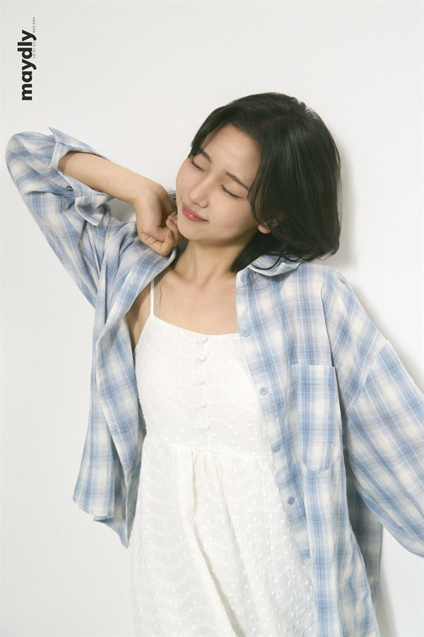

Background
A short overview space for education, experience, interests, or current focus.
Personal website
A concise portfolio home for profile details, selected work, and a downloadable resume.

This site gathers Suyeon's profile, work highlights, and resume in one accessible page that can be published directly with GitHub Pages.
Three focused areas are included so the page has a clear structure while remaining easy to update.
A short overview space for education, experience, interests, or current focus.
A place to highlight practical work, research, writing, or other selected accomplishments.
The resume section links directly to the local PDF asset for simple sharing and GitHub Pages compatibility.
Download the CV as a PDF for more detail on experience, education, and contact information.
The PDF is stored locally in the repository and linked without any backend service.
Open CVContact details can be shared through the resume, and additional profile links can be added here when ready.